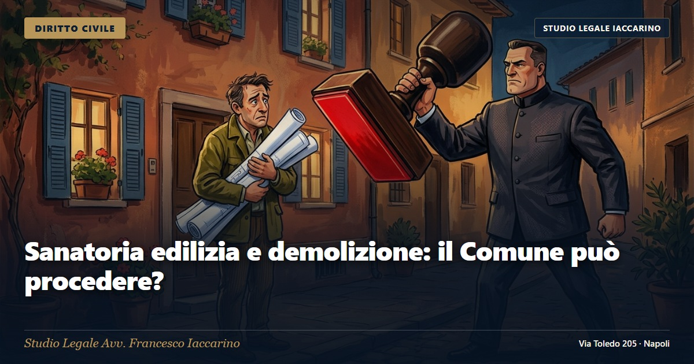

Sanatoria edilizia e demolizione: il Comune può procedere?

Presentare la sanatoria edilizia blocca la demolizione ordinata dal Comune?
La risposta breve è sì: la presentazione di una domanda di sanatoria edilizia, sia essa ai sensi dell'art. 36 o dell'art. 36-bis del Testo Unico Edilizia (D.P.R. 380/2001), determina un effetto sospensivo immediato sull'ordine di demolizione emesso dal Comune. In termini pratici, questo significa che l'amministrazione non può procedere con l'abbattimento forzoso dell'opera finché il procedimento di regolarizzazione è in corso di istruttoria.
Tuttavia, è fondamentale comprendere che tale blocco non è definitivo né annulla l'ordine di demolizione. Si tratta di una sospensione temporanea, una sorta di "quiescenza" dell'atto sanzionatorio. Se la sanatoria viene accolta, l'ordine di demolizione perde il suo scopo e viene archiviato; se invece la domanda viene respinta, l'ordine di demolizione riacquista immediatamente la sua piena efficacia esecutiva, senza che il Comune debba emettere un nuovo provvedimento.
Cosa dice la legge e cosa cambia tra art. 36 e art. 36-bis?
Il Testo Unico Edilizia prevede due strade principali per tentare di regolarizzare un abuso. L'art. 36 disciplina l'accertamento di conformità ordinario, che richiede la cosiddetta "doppia conformità": l'opera deve risultare conforme sia alla normativa urbanistica vigente al momento della sua realizzazione, sia a quella vigente al momento della presentazione della domanda. In questo caso, il Comune ha 60 giorni per decidere. Se non risponde, si forma il silenzio-rigetto: la domanda è respinta e l'ordine di demolizione torna operativo.
Diverso è il caso dell'art. 36-bis, introdotto dal recente Decreto Salva Casa (D.L. 69/2024), che disciplina una sanatoria semplificata per parziali difformità o abusi minori. Qui il meccanismo è più favorevole al cittadino: se il Comune non si pronuncia entro 45 giorni, si forma il silenzio-assenso. In questa ipotesi, la domanda si intende accolta e l'ordine di demolizione decade definitivamente. È una distinzione cruciale per chi vive a Napoli e deve gestire pratiche edilizie complesse, poiché il decorso del tempo gioca ruoli opposti a seconda della norma applicata.
Cosa rischia chi non ottiene la sanatoria?
Chi presenta una domanda di sanatoria sperando di guadagnare tempo indefinito commette un errore strategico pericoloso. Se la pratica viene rigettata, l'ordine di demolizione originario, che era rimasto "congelato" durante l'istruttoria, riprende vigore automaticamente. Non è necessario che il Comune notifichi un nuovo atto o un nuovo sollecito: il termine per demolire, che era stato sospeso, riprende a decorrere dal momento in cui la sanatoria è stata negata.
La giurisprudenza, inclusa quella richiamata in sentenze come la n. 10133/2023 o la n. 7225/2023, è costante nel ribadire che il procedimento sanzionatorio e quello di sanatoria sono binari paralleli. Il rigetto della sanatoria non cancella l'abuso, ma conferma la necessità di ripristinare lo stato dei luoghi. Il rischio concreto è quello di trovarsi con un ordine di demolizione esecutivo e l'impossibilità di presentare ulteriori istanze dilatorie, esponendosi al rischio di demolizione d'ufficio da parte del Comune con addebito delle spese a carico del proprietario.
Come muoversi passo dopo passo: checklist operativa
Per affrontare correttamente la notifica di un'ordinanza di demolizione, è necessario agire con metodo e tempestività. Ecco i passi da seguire:
- Verifica tecnica preliminare: Prima di presentare qualsiasi istanza, incarica un tecnico di fiducia per verificare se l'opera possiede i requisiti di conformità richiesti (doppia conformità per l'art. 36 o i requisiti specifici per l'art. 36-bis).
- Analisi della normativa: Accerta se l'abuso rientra nelle fattispecie sanabili. Presentare una domanda per un'opera palesemente non sanabile è inutile e rischia di essere interpretato come un tentativo dilatorio.
- Predisposizione della pratica: Raccogli tutta la documentazione storica e tecnica necessaria. La domanda deve essere completa per evitare richieste di integrazione che potrebbero allungare i tempi.
- Invio tramite PEC: Presenta l'istanza di sanatoria esclusivamente tramite PEC al Comune di Napoli, assicurandoti di conservare la ricevuta di accettazione e di consegna, che costituisce la prova legale della sospensione dell'ordine di demolizione.
- Monitoraggio dei termini: Tieni traccia dei giorni (60 per l'art. 36, 45 per l'art. 36-bis) per sapere esattamente quando il silenzio del Comune produrrà i suoi effetti (rigetto o assenso).
Errori comuni da evitare
- Aspettare l'ultimo giorno: Non attendere la scadenza del termine per demolire per presentare la sanatoria; il Comune potrebbe avviare l'esecuzione forzata prima della ricezione della pratica.
- Confondere le norme: Applicare l'art. 36 quando si potrebbe usufruire dell'art. 36-bis (o viceversa) può portare a un rigetto evitabile.
- Ignorare il silenzio-rigetto: Pensare che il silenzio del Comune sia un assenso nell'art. 36 è un errore fatale che porta alla perdita del diritto di difesa.
- Non impugnare il rigetto: Se la sanatoria viene negata, hai 60 giorni per ricorrere al TAR. Non agire significa accettare passivamente l'ordine di demolizione.
In sintesi: cosa ricordare
- La presentazione della sanatoria sospende l'ordine di demolizione solo temporaneamente, finché dura l'istruttoria.
- Nell'art. 36, il silenzio del Comune dopo 60 giorni equivale a un rigetto e l'ordine di demolizione torna esecutivo.
- Nell'art. 36-bis, il silenzio dopo 45 giorni equivale ad assenso e l'ordine di demolizione decade.
- Il rigetto della sanatoria non richiede un nuovo ordine di demolizione: quello vecchio torna immediatamente efficace.
La gestione di un abuso edilizio richiede una valutazione attenta della normativa vigente e della situazione specifica dell'immobile. Se hai ricevuto un'ordinanza di demolizione e desideri analizzare le tue possibilità di regolarizzazione, puoi valutare il tuo caso specifico con una consulenza iniziale presso il nostro studio a Napoli, in Via Toledo 205.
Spunto: La Legge per Tutti.
Domande frequenti
La presentazione della sanatoria annulla l'ordine di demolizione?
No, la presentazione della domanda sospende solo l'efficacia dell'ordine di demolizione per tutta la durata dell'istruttoria. Se la sanatoria viene negata, l'ordine torna immediatamente esecutivo.
Cosa succede se il Comune non risponde alla domanda di sanatoria?
Dipende dalla norma utilizzata: con l'art. 36, il silenzio dopo 60 giorni equivale a un rigetto. Con l'art. 36-bis, il silenzio dopo 45 giorni equivale a un assenso.
Posso presentare la sanatoria anche se l'ordine di demolizione è già arrivato?
Sì, la presentazione della domanda è possibile anche dopo la notifica dell'ordinanza di demolizione e produce l'effetto di sospendere l'esecuzione dell'atto sanzionatorio durante il procedimento.
Cosa succede se la sanatoria viene respinta?
Se la sanatoria viene negata, l'ordine di demolizione originario riacquista piena efficacia senza bisogno di nuovi atti da parte del Comune. Il proprietario deve procedere alla demolizione o impugnare il rigetto davanti al TAR.
È necessario un nuovo ordine di demolizione dopo il rigetto della sanatoria?
No, l'ordine di demolizione originario rimane valido e sospeso durante l'istruttoria. In caso di rigetto, torna operativo automaticamente.
Qual è la differenza tra art. 36 e 36-bis?
L'art. 36 richiede la doppia conformità e prevede il silenzio-rigetto dopo 60 giorni. L'art. 36-bis è per abusi minori, non richiede la doppia conformità rigorosa e prevede il silenzio-assenso dopo 45 giorni.
Ti riguarda da vicino?
Porta i documenti in studio o inviali per una consulenza da remoto: verifichiamo insieme i termini e la strada da seguire.
Prenota una consulenza — 200 €Oppure chiama direttamente: 333 568 4659
Avv. Francesco Iaccarino — Foro di Napoli — Via Toledo 205, 80132 Napoli